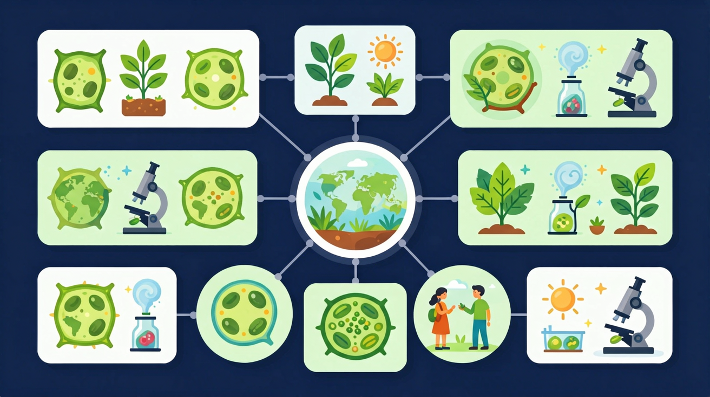
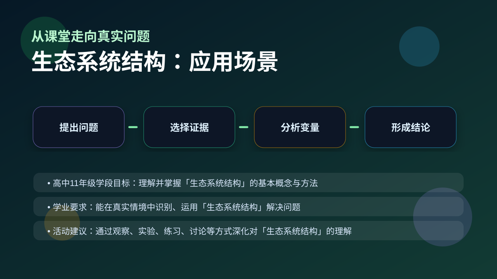

Gallery v1.0.0 · skill v7.14
生命系统怎样在种群、群落和生态系统层面保持动态平衡？

先选一个卡点。后面的例子、互动和 AI 学伴都会围绕它给你最小提示。
选择或输入后，本课会围绕你的问题展开。
如果学生只说出概念名称，继续追问：题干里哪个证据最关键？这个证据对应分子、细胞、个体还是生态系统层级？如果改变 生产者数量、消费者层级、分解者活动和非生物环境条件 中的一个条件，结果会怎样？这三问能把答案从背诵推进到科学解释。
❓ 为什么说'生产者不一定是植物'？
❓ 分解者为啥不算消费者？
❓ 食物链里能量到底怎么'漏'的？
学完这一课，这些问题你都能自信地回答。
已经知道：此前已学习生态系统的组成（生产者、消费者、分解者）和食物链基本概念，能列举池塘生态系统中的藻类、鱼类等生物成分
但问题是：难以理解非生物环境（如阳光、温度）如何影响营养结构，常将分解者误归类为消费者，且无法解释食物网中能量流动路径的变化规律
所以学：当调查校园池塘鱼类大量死亡事件时，需要通过绘制食物网分析各成分关系，检测水温溶解氧等非生物因素，最终定位生态结构破坏的关键环节
下列哪项会被错误地加入食物链？
分析藻类爆发的可能原因
现象入口：一个池塘中有生产者、消费者、分解者和非生物环境，生物之间通过食物关系连接。
机制解释：生态系统结构包括组成成分和营养结构，食物链和食物网决定物质循环与能量流动路径。
证据抓手：证据来自物种调查、食性分析、能量金字塔和物质输入输出。
变量线索：生产者数量、消费者层级、分解者活动和非生物环境条件。做题时先找变量，再判断机制，最后写证据。
情境：细菌不一定都是分解者，硝化细菌可作为生产者参与生态系统。
作答路径：现象：硝化细菌不依赖现成有机物却能合成有机物。机制：其通过化能合成作用将氨氧化为亚硝酸获取能量，属于生产者。证据：实验室培养硝化细菌的培养基无需添加有机营养
评分提醒：典型失分：食物链漏写生产者或含分解者（占38%）、营养级判断未考虑多食性（占52%）、分析影响时忽略间接效应（占67%）
观察草原生态系统中草→鼠→蛇的食物链，明确能量流动方向
分析食物网中蛇同时占据第三、第四营养级的双重角色
说明分解者虽不参与食物链，但通过分解有机物维持物质循环
用热带雨林与荒漠对比，解释食物网复杂度与稳定性的关系

分析农田、池塘或森林生态系统，要先列成分再画营养结构。
提交后会检查你的解释是否包含现象、机制和变量。
能量沿食物链单向流动、逐级递减——拖动传递效率，看能量金字塔如何变“尖”。
💡 探究任务：把传递效率从 10% 调到 20%，比较顶级消费者获得的能量，解释为什么食物链一般不超过 5 个营养级。
关于营养级位置的判断正确的是？
先独立作答，再点选项查看对错与错因。
人工湖中最可能缺失的生态系统成分是
管理员打捞漂浮物主要影响了
若湖水变浑浊导致沉水植物死亡，首先受影响的是
水蚤以藻类为食，轮虫捕食水蚤，这些生物构成了____条食物链
答案：1
藻类→水蚤→轮虫形成单一链条
柳树落叶中的有机物通过____作用才能被藻类重新利用
答案：分解
分解者将有机物转化为无机物
若某草原食物网中蛇数量锐减，最可能导致？
学习小结：生态系统通过营养结构（食物链/网）实现能量流动，生产者是起点，生物可占多个营养级，组分变化会通过捕食关系连锁影响其他物种
只按“动物/植物/微生物”分类，忽略生态功能角色。
只说“增加/减少”不够，要写清改变的是 生产者数量、消费者层级、分解者活动和非生物环境条件 中的哪一个。
没有实验现象、曲线趋势或结构证据，答案就像猜测。
✅ 硝化细菌是生产者，寄生细菌是消费者
💡 忽视微生物的多样性功能
✅ 分解者不参与食物链计数
💡 混淆物质循环与能量流动路径
口诀：生消分环四件套，能量递减物质绕
类比：生态系统像超市：生产者是货架，消费者是顾客，分解者是清洁工
视频用语音和动态画面回顾本课主线：问题情境 → 机制模型 → 证据判断 → 迁移应用。
用 PhET 观察环境压力如何改变种群中不同表型个体的比例，再讨论它和 生态系统结构 的关系。
💡 操作提示：改变环境、捕食者或突变条件，记录种群数量曲线，判断哪些变化是个体层面，哪些是种群层面。
写出含三个营养级的食物链并标出各成分生态地位
分析池塘生态系统：若移除全部肉食性鱼类，浮游动物数量将如何变化？说明依据
设计实验方案验证‘复杂食物网生态系统抵抗力稳定性更强’的假说